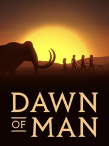

Dawn of Man
Dawn of Man
Detalles
|  | |
| Tiempo de juego | No Jugado |
| Última actividad | Nunca |
| Añadido | 27/10/2023 19:06:24 |
| Modificado | 27/10/2023 19:07:44 |
| Estado de finalización | Not Played |
| Librería | Steam |
| Fuente | Steam |
| Plataforma | PC (Windows) |
| Fecha de lanzamiento | 01/03/2019 |
| Puntuación de la Comunidad | 85 |
| Puntuación de la Crítica | 70 |
| Puntuación de usuario | |
| Género | Indie Simulation Strategy |
| Desarrollador | Madruga Works |
| Editor | Madruga Works |
| Característica | Achievements Single Player Workshop |
| Enlaces | Punto de encuentro Discusiones Guías Noticias Página de la tienda PCGamingWiki Logros Workshop |
| Tag | choices-matter City Builder Colony Sim Destruction Economy Historical indie Management Multiplayer Nudity Open World political Resource Management rts Sandbox Simulation Singleplayer Story Rich Strategy Survival |
Descripción
Take control of a settlement of the first modern humans, guide them through the ages in their struggle for survival.
Dawn of Man is a survival/city-builder from the creators of Planetbase.
The game starts in the Stone Age, and takes you up to the Iron Age, spanning more than 10,000 years of human prehistory.
You will have to get your people to survive, expand and evolve, just like our ancestors, facing the challenges that the environment will throw at you.

Confront Mammoths, Woolly Rhinos, Ancient Bison, Megaloceros, Cave Lions and other species that roamed the earth at the time.
When winter comes, make sure to have enough non-perishable food and warm clothing in order to survive.
Construct fortifications and craft weapons, so you are ready for when the inevitable conflict comes.

Dawn of Man is a survival/city-builder from the creators of Planetbase.
The game starts in the Stone Age, and takes you up to the Iron Age, spanning more than 10,000 years of human prehistory.
You will have to get your people to survive, expand and evolve, just like our ancestors, facing the challenges that the environment will throw at you.
Hunt
Animals were a vital source of food and resources for ancient humans. Use their meat to feed your people and their skin and bones to make clothing and craft the tools you will need to stay alive.Confront Mammoths, Woolly Rhinos, Ancient Bison, Megaloceros, Cave Lions and other species that roamed the earth at the time.
Gather
Collect a variety resources from the environment: fruit, berries, water, wood, flint, stone, ores. Use them to prepare food, to make tools and to build structures in your settlement.Plan for harsh times
Fish is more abundant in spring, berries and fruit can be collected in summer and animals are easier to come by when it's warm.When winter comes, make sure to have enough non-perishable food and warm clothing in order to survive.
Expand and fortify your settlement
Build more homes and facilities for your people, in order to expand your population.Construct fortifications and craft weapons, so you are ready for when the inevitable conflict comes.
Research Technologies
Each new discovery will make it easier for your settlement to be able to support larger populations, but will also bring new challenges: increased food demand, morale issues and more frequent raider attacks.Build Megalithic Structures
Our ancestors were capable of incredible engineering feats: mine massive rocks from the environment, transport them using sledges and construct colossal stone structures.Control Nature
Unlock farming technologies to grow your own vegetables, so you can feed large amounts of people. Domesticate animals to produce food, resources and provide increased muscle power.